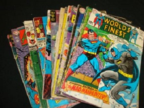

Fantasy
Fantasy is a genre of fiction set in a fictional universe, often (but not always) without any locations, events, or people referencing the real world. Its roots are in oral traditions, which then developed into literature and drama. From the twentieth century it has expanded further into various media, including film, television, graphic novels and video games.Fantasy is a genre of fiction set in a fictional universe, often (but not always) without any locations, events, or people referencing the real world. Its roots are in oral traditions, which then developed into literature and drama. From the twentieth century it has expanded further into various media, including film, television, graphic novels and video games.In its broadest sense, however, fantasy comprises works by many writers, artists, filmmakers, and musicians from ancient myths and legends to many recent and popular works.
Mystery
Mystery fiction is a genre of fiction usually involving a mysterious death or a crime to be solved. In a closed circle of suspects, each suspect must have a credible motive and a reasonable opportunity for committing the crime. The central character must be a detective who eventually solves the mystery by logical deduction from facts fairly presented to the reader. Sometimes mystery books are nonfictional. "Mystery fiction" can be detective stories in which the emphasis is on the puzzle or suspense element and its logical solution such as a whodunit. Mystery fiction can be contrasted with hardboiled detective stories, which focus on action and gritty realism.This contrasted with parallel titles of the same names which contained conventional hardboiled crime fiction. The first use of "mystery" in this sense was by Dime Mystery, which started out as an ordinary crime fiction magazine.
Comics
 A comic book is also called comic magazine or simply comic, is a publication that consists of comic art in the form of sequential juxtaposed panels that represent individual scenes. Panels are often accompanied by brief descriptive prose and written narrative, usually dialog contained in word balloons emblematic of the comics art form. Although comics has some origins in 18th century Japan and 1830s Europe, comic books were first popularized in the United States during the 1930s.The first modern comic book, Famous Funnies, was released in the United States in 1933 and was a reprinting of earlier newspaper humor comic strips, which had established many of the story-telling devices used in comics. The term comic book derives from American comic books once being a compilation of comic strips of a humorous tone; however, this practice was replaced by featuring stories of all genres, usually not humorous in tone.